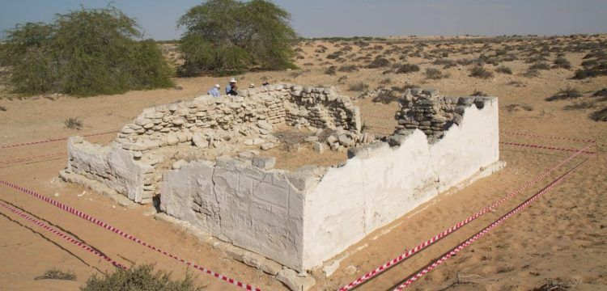
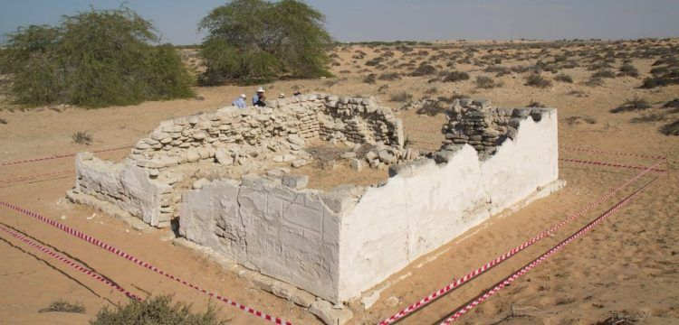
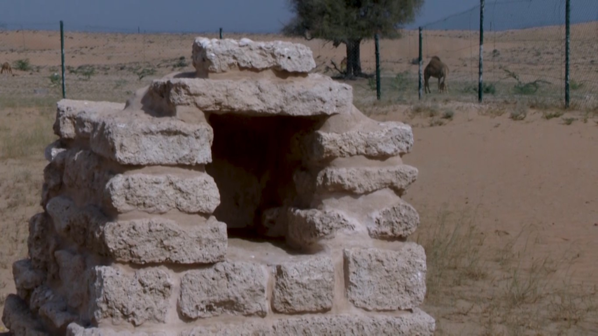
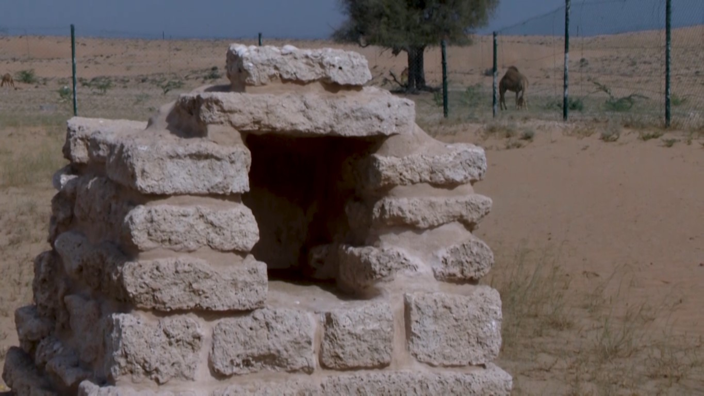

Al Dour, also known as Ed Dour and Ad Dour, is an ancient coastal settlement in Umm Al Quwain, part of the Near East civilization (an early civilization located in the Middle East). It is one of the largest archaeological sites in the country, overlooking the Al Beidha Lake, and is dubbed as one of the most significant lost cities of Arabia. First discovered by Iraqi archaeologists in 1973, digging began the following year, and a formal exploration commenced in 1989. Evidence of human habilitation span from the Ubeid period, Stone, Bronze, and Iron Ages, and the Pre-Islamic period. The artifacts uncovered at the site have evidence of trade with other civilizations, and ancient Greek manuscripts have reports of the trade of goods with this settlement. This site is on the UNESCO World Heritage list. There is also a temple and a fort here. Timings for visits are from 6 AM - 6 PM.
 

 
